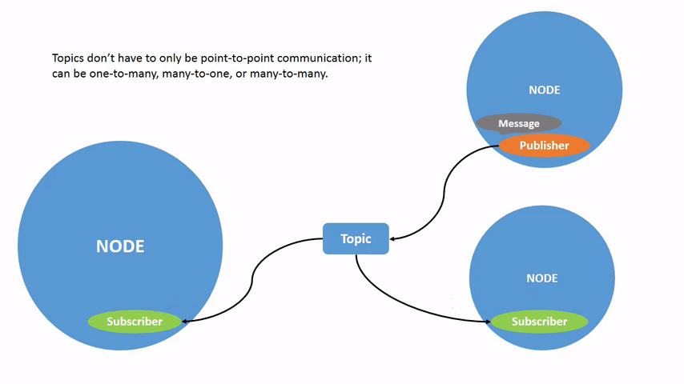
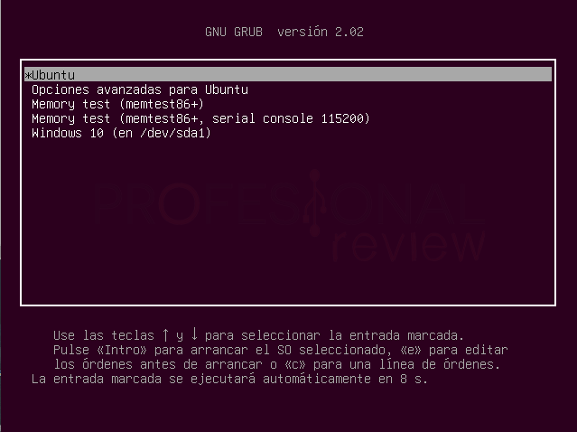
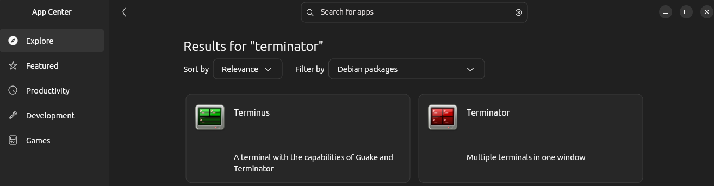

Objetivos de la clase
- Introducción a ROS 2.
- Instalación del entorno (Ubuntu 22.04 + Humble).
- Teleoperar Turtlesim desde la terminal.
¿Qué es ROS 2?
ROS 2 (Robot Operating System 2) es una capa de software que corre sobre Linux o Windows, utilizando el middleware DDS como base para la comunicación entre procesos.
ROS 2 funciona como el "sistema nervioso" de un robot. Permite que los diferentes componentes de la máquina (cámaras, sensores, motores, algoritmos de IA) se comuniquen entre sí de forma rápida y ordenada.
Ecosistema ROS 2
- Paquetes (packages): Componentes de software reutilizables.
- Nodos (nodes): Programas individuales que se comunican entre sí.
- Topics: Canales para mensajes unidireccionales y asíncronos.

- Services: Para llamadas sincrónicas tipo request-response.

- Actions: Para tareas que pueden tomar tiempo y requieren feedback.
- Launch files (Python): Permiten iniciar múltiples nodos con configuraciones específicas.
Instalación de Ubuntu
Para el funcionamiento de ROS 2 es necesario instalar Ubuntu. En este curso trabajaremos con Ubuntu 22.04 y ROS Humble.
Link para instalación en Dual-Boot: Dual-Boot (YouTube)

Comandos básicos de Linux
ls: Listar archivos y directorios.cd: Cambiar de directorio.
cd /home/ # Te lleva al directorio Home.pwd: Mostrar el directorio actual.mkdir: Crear un nuevo directorio.
mkdir nuevo_directoriorm: Eliminar archivos o directorios.
rm archivo.txt # Elimina el archivo.rm -r carpeta # Elimina una carpeta y su contenido.
mv: Mover o renombrar archivos o directorios.
mv archivo.txt /ruta/destino/ # Mueve el archivo.mv archivo.txt nuevo_nombre.txt # Renombra.
touch: Crear un nuevo archivo.
touch nuevo_archivo.txtifconfig: Mostrar la configuración de red.
Instalación de aplicaciones necesarias
Desde el App Center buscar "Terminator" filtrando por "Debian packages".

Para instalar Visual Studio Code:
- Sitio oficial: Documentación de VS Code
- Descargar el paquete .deb
- Instalarlo con el comando:
sudo apt install ./<nombre_del_paquete>.debInstalación de ROS 2 Humble
Página oficial de ROS 2 Humble
1. Fuentes de configuración
sudo apt install software-properties-commonsudo add-apt-repository universe
2. Actualizar repositorios
sudo apt update && sudo apt install curl -y3. Agregar repositorio de ROS 2
export ROS_APT_SOURCE_VERSION=$(curl -s https://api.github.com/repos/ros-infrastructure/ros-apt-source/releases/latest | grep -F "tag_name" | awk -F'"' '{print $4}')curl -L -o /tmp/ros2-apt-source.deb "https://github.com/ros-infrastructure/ros-apt-source/releases/download/${ROS_APT_SOURCE_VERSION}/ros2-apt-source_${ROS_APT_SOURCE_VERSION}.$(. /etc/os-release && echo ${UBUNTU_CODENAME:-${VERSION_CODENAME}})_all.deb"sudo dpkg -i /tmp/ros2-apt-source.deb
4. Instalar ROS 2 Humble
sudo apt updatesudo apt upgradesudo apt install ros-humble-desktop
5. Herramientas adicionales
sudo apt install python3-colcon-common-extensionssudo apt install ros-dev-tools
6. Configurar el entorno
echo "source /opt/ros/humble/setup.bash" >> ~/.bashrcsource ~/.bashrc
7. Verificar la instalación
# Terminal 1
# Terminal 2
ros2 run demo_nodes_cpp talker# Terminal 2
ros2 run demo_nodes_cpp listener